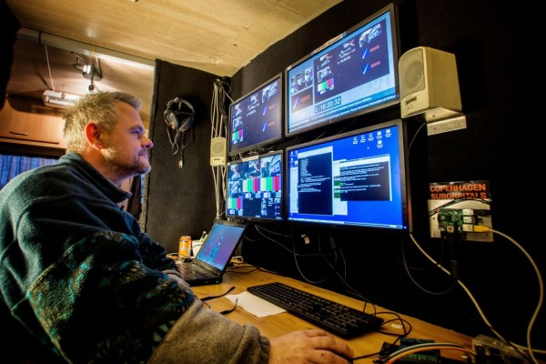

About Snowmix
What is Snowmix?
Snowmix is a leading Free and Open Source Video Mixer. Snowmix is a very fast and flexible command line tool with a small ressource footprint for dynamically mixing live audio and video feeds.
Snowmix supports overlaying and mixing video, images, texts and graphic elements as well as suporting mixing audio sources. Snowmix offers animation, simple and advanced scripting, clipping and pattern gradient blending.
From version 0.5.0, Snowmix offers in addition to native support for 2D graphics also native support for 3D graphics through OpenGL support. Both off-screen (CPU based) and hardware accelerated (GPU) OpenGL rendering are supported.
Version 0.5.1.1 offer updated support for compiling, installing and running Snowmix on newer platform released after version 0.5.1.
Chroma keying (green screening) will be supported from future version 0.5.2.
Hardware acceleration on Raspberry Pi will be supported from future version 0.5.2.
Snowmix is well suited to run headerless and to be controlled remotely over low bandwidth TCP connections. More information on features, specs and many other details are to be found in the FAQ.
From version 0.5.1, a number of GUI tools suitable for using Snowmix in a Live production environment are included.
Most information on Snowmix is found on this website you are now. However additional information can also be found on the Snowmix SourceForge project website.
What is Snowmix not?
Snowmix is NOT an application, but rather a highly advanced and specialized tool. As it is with many tools, its full potential depends on the abilities, knowledge, skills and talent of the user.
Are you looking for an easy point-and-click solution, Snowmix is not your solution.
Are you on the other side looking for a Swiss Army Knife of Open Source Live Video Mixing for building your own video mixer application or system and prepared to read the necessary doucmentation to acquire information, chances are that you have come to the right place.
Why is Snowmix designed the way it is?
Snowmix was originally developed (and still is) by the author for producing Live streaming television from the rocket launches in the Baltic Sea by Copenhagen Suborbitals.
.You can see many of the videos from Copenhagen Suborbitals on YouTube.
Due to the nature of the task, Snowmix is designed to run headerless and to be controlled remotely over low bandwidth TCP connections.
Snowmix in action operated by the author for Copenhagen Suborbitals in OB-1.
Who is developing Snowmix?
Snowmix is being developed by Peter Maersk-Moller. Peter Maersk-Moller has a past as Network Manager for Space Applications Institute, Joint Research Centre, Ispra Italy, IP Backbone Architect and IP Evangelist for Ebone and Ebone IP Future Lab, Copenhagen, Brussels and London, CEO and CTO for Optimal Stream and StreamTV, Copenhagen, Director for Live Streaming Development for The Venice Project aka Joost, Leiden/London and Senior Consultant for a number of companies and governments. Peter is currently working as Senior Consultant and IP Architect on large scale IT systems and large scale networks.
Over time Peter has been contributing to Open Source Projects within video coding, streaming, set top boxes, network management, network monitoring and network traffic analysis.
Currently Peter works as a private consultant within telecommunication network design, encoding and streaming as well as media projects. Peter can be contacted as in the Support Forum or through the message system at SourceForge privately to Peter Maersk-Moller (requires login to SourceForge).
Snowmix is free as in free beer. However as Peters dayjob is taking away valuable development time for the project, please consider making a donation through the project's Donation Page.